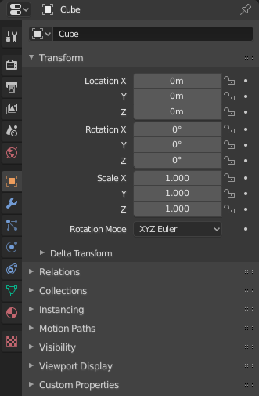
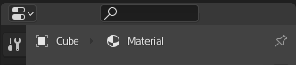

属性¶

显示 物体 属性的属性编辑器。¶
属性编辑器显示并允许编辑大量活动数据，包括活动场景和物体。
选项卡¶
属性编辑器有几个类别，可以通过选项卡（左侧的图标列）进行选择。每个选项卡重新组合数据类型的属性及设置，并在其手册部分中进行存档记录，链接如下。
标题栏¶

属性编辑器的标题栏。¶
- 显示过滤器 Ctrl-F
允许通过名称搜索属性。结果将高亮，而相应面板将同样高亮和展开。该搜索跨多个 Tabs 工作；没有搜索结果的灰色标识。可以使用 Ctrl-F 开始一个搜索，或使用 Alt-F 清除一个搜索。如果不记得属性编辑器中的属性位置，该过滤器很有用。
- 数据上下文
标题栏的正下方是图标和文本项的列表，这些列表显示了正在编辑的属性的所有者，以及一些需要的依赖关系上下文。在上面的示例中，活动物体 "Cube"使用材质 "Material"。
- 切换钉固ID
通过在右侧的图钉图标上切换，Blender在该编辑器中仅显示当前显示的数据块的属性，而不考虑进一步的选择更改。切换图钉以切换回默认行为，显示活动数据块的属性。